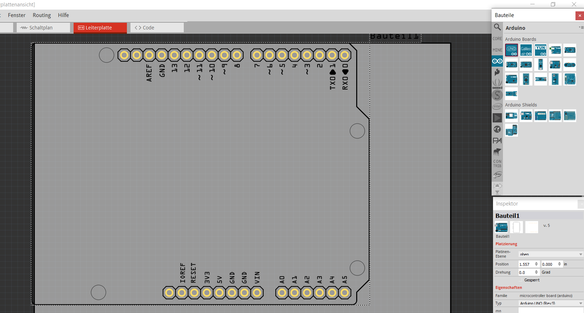
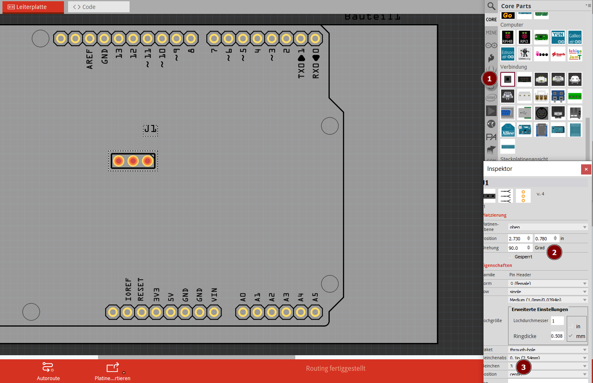
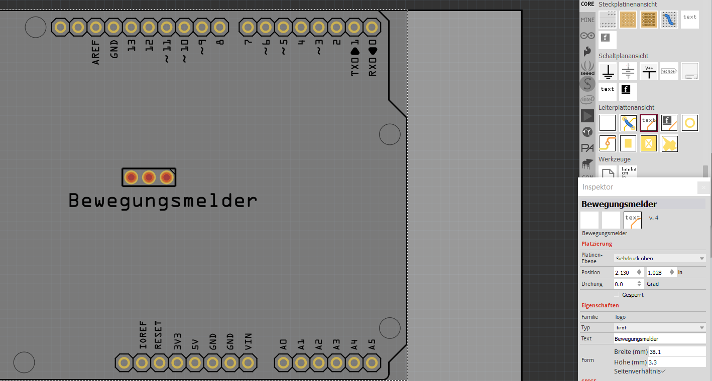
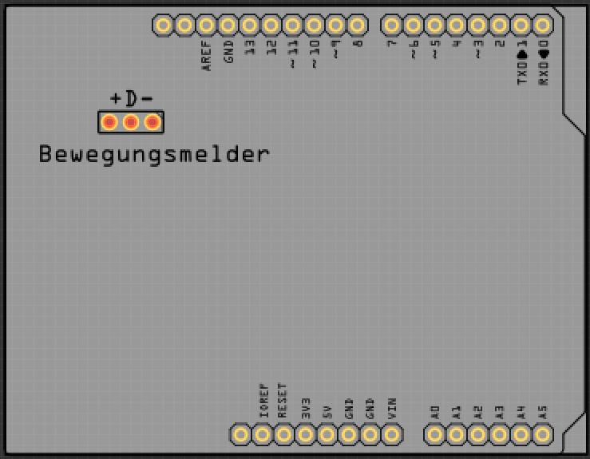
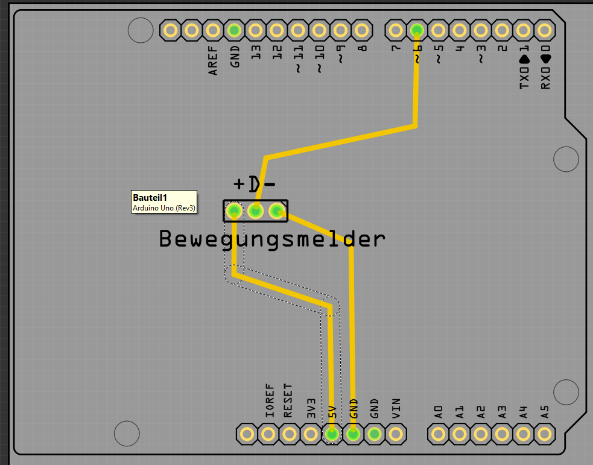
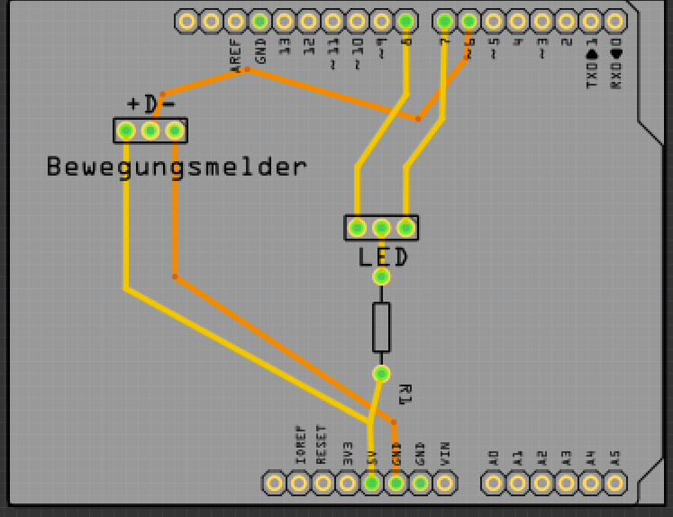
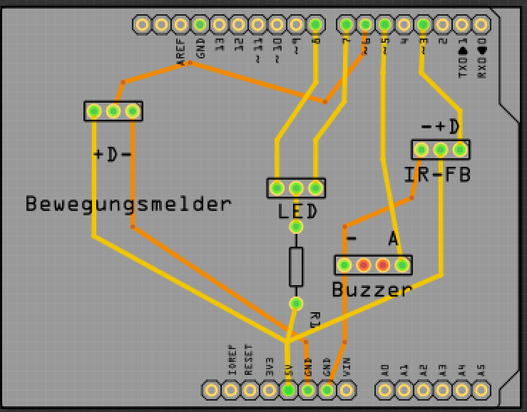
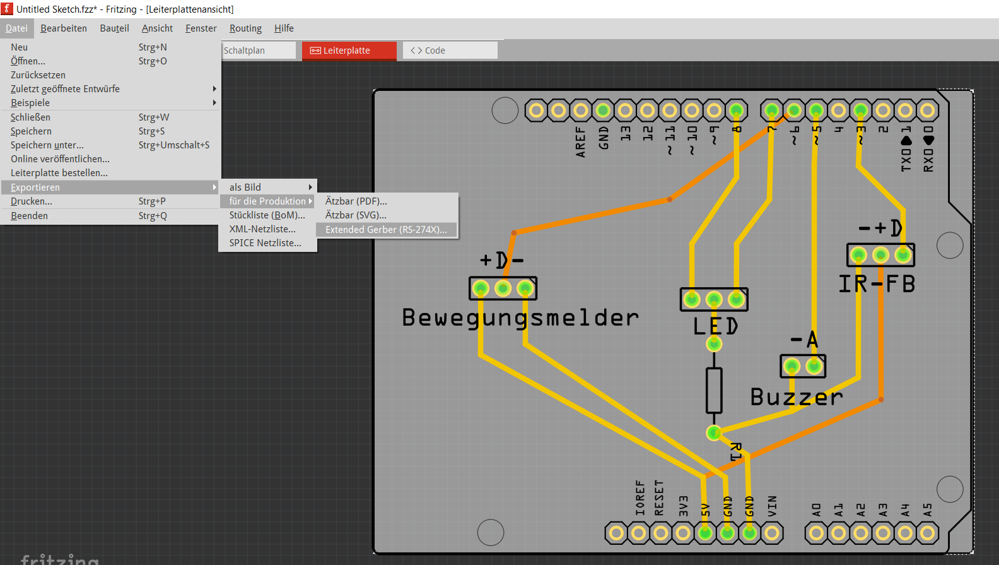

Für unsere Alarmanlage entwickeln wir ein Shield, das direkt auf den Arduino Uno aufgesteckt werden kann und Anschlüsse für alle Bauteile enthält.
Entwurf in der Leiterplatten Ansicht.
Arduino Uno
Ziehe einen Arduino UNO auf die Arbeitsfläche:

Wenn wir die Platine später herstellen lassen, werden
die Beschriftungen aufgedruckt
die Kontakte als Löcher gebohrt.
Anschlüsse für Bewegungsmelder
Ziehe aus dem Anschlüsse-Bereich einen Generic female Header auf den Arduino
Stelle im Inspektor ein, dass er um 90° gedreht ist
und 3 Pins hat:

Beschriftung
Schalte im Menü Bauteil den Punkt Bauteilbeschriftung anzeigen aus.
Ziehe aus dem Leiterplattenansicht-Bereich einen text auf den Arduino
Ändere im Inspektor den Text von logo auf Bewegungsmelder

Füge eine weitere Beschriftung mit + D - hinzu.

Verdrahtung
Ziehe einen Draht von + zu 5V des Arduinos.
Ziehe einen Draht von - zu GND.
Ziehe einen Draht von D zu 6.
Ziehe an den Drähten, so dass sie gute Abstände zu den anderen Kontakten haben. WICHTIG: Rechte Winkel sind auf Leiterplatten nicht erwünscht, da sie beim Ätzen Probleme bereiten.

2-Farb-LED
Ziehe aus dem Anschlüsse-Bereich einen weiteren Generic female Header auf den Arduino
Stelle im Inspektor ein, dass er um 90° gedreht ist und 3 Pins hat.
Beschrifte ihn mit LED
Ziehe aus dem Basis-Bereich einen Widerstand auf den Arduino.
Verbinde den Widerstand mit dem mittleren Pol der LED und 5V.
Verbinde die beiden anderen Pole der LED mit den Pins 7 und 8.
Hierbei musst du den Draht von D zu Pin 6 kreuzen. Klicke ihn mit der rechten Maustaste an und verschiebe ihn auf die untere Ebene:

Buzzer
Ziehe aus dem Anschlüsse-Bereich einen weiteren Generic female Header auf den Arduino
Stelle im Inspektor ein, dass er um 90° gedreht ist und 4 Pins hat.
Wir benötigen später nur die beiden äußeren Pins.
Beschrifte ihn mit Buzzer
Beschrifte ihn mit - und A
Schließe - an GND und A an Pin 5 an.
Fernbedienungssensor
Füge einen weiteren 3-Pin-Anschluss für den IR-Sensor hinzu:

Entwurf speichern
Speichere den Entwurf im Menü Datei.speichern als Fritzing-Datei.
Platine bestellen
Aisler
Die Platine kann beim deutshen Hersteller Aisler direkt aus Fritzing heraus bestellt werden.
Klicke auf das Menü Datei.Leiterplatte bestellen.
Wähle Hochladen zur FAB
Klicke auf Open in Browser
Klicke dich durch den Bestellprozess.
PCBWay
Für den chinesischen Anbieter PCBWay musst du die Platine zuerst als Sammlung von Gerber-Dateien exportieren:
Ziehe die graue Leiterplattenfläche so klein, dass sie den Arduino genau überdeckt.
Wähle das Menü Datei.Exportieren.Für die Produktion.Extended Gerber und speichere die Dateien in einem passenden Ordner.

Importiere alle Gerber-Dateien, die du vorher exportiert hast.
Klicke auf Get Instant PCB Quote um die Platinen zu bestellen.
Lötunterlage erstellen
Für Stiftsockelleisten kann eine Lötvorlage für den 3D-Drucker erstellt werden:
Exportiere das Projekt als SVG-Dateien:
Datei.Exportieren.für die Produktion.Ätzbar(SVG)
Öffne eine Datei mit den Borhungen in Inkscape
Speichere die Datei im Autocad DXF12-Format (Datei.Speichern unter)
Stelle im Speichermenü die Einheit auf mm und die Zeichencodierung auf UTF-8
Starte Onshape und erzeuge eine neue Datei.
Erzeuge eine neue Skizze auf der Top-Ebene
Klicke auf DXF oder DWG einfügen (ggf. musst du das Werkzeug suchen lassen)
Importiere die DXF-Datei, die du gerade herunter geladen hast.
Extrudiere die Skizze 10 mm hoch.
Auf der Lötunterlage können jetzt die Stiftsockelleisten beim Löten aufgesteckt werden.
Um Buchsenleisten zu löten kann ebenfalls dieser Weg beschritten werden. Hier schließen sich weitere Schritte an:
11. Erzeuge eine neue Skizze auf der Oberfläche der Löthilfe
12. Für ungerade Bohrungszahlen:
Erstelle einen Dreipunktkreis auf der mittleren Bohrung
Erstelle ein Mittelpunktrechteck auf dem Mittelpunkt des Kreises mit folgenden Maßen:
n*2.54+1 mm Breite (n=Zahl der Bohrungen)
3 mm Höhe
Für gerade Borhungenszahlen:
Erstelle zwei Dreipunktkreise auf den mittleren beiden Bohrungen
Erstelle eine Linie zwischen den Mittelpunkten dieser beiden Kreis
Erstelle das Mittelpunktrechteck auf dem Mittelpunkt dieser Linie.